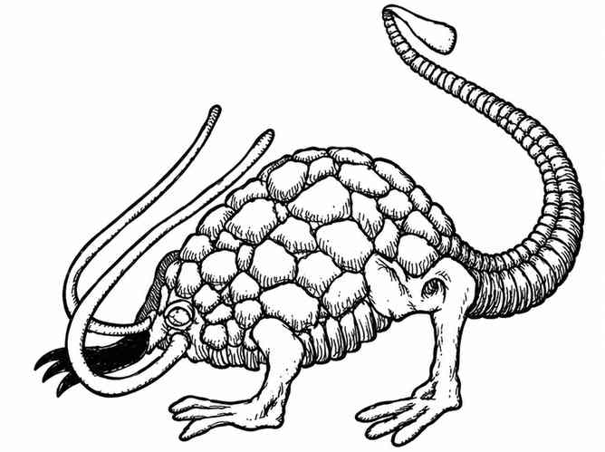

锈蚀怪 · Rust Monster
 |
|
锈蚀怪只栖息在黑暗的地下区域，四处寻找各种金属，尤其是铁、钢以及钢合金（例如秘银与精金制成的武器和护甲）。若锈蚀怪的两根触须碰到金属（进行命中检定），金属就会锈蚀或腐蚀。魔法物品可进行豁免检定，每有一个强化加值便有 10% 的概率不受影响；例如 +2 武器或护甲有 20% 的概率保全。受影响的金属会立即锈蚀、腐蚀并碎裂，随后被锈蚀怪轻松吞食消化。
攻击锈蚀怪的武器，会像被其触须碰到一样受到影响。锈蚀怪能在 9 寸外嗅到金属；若逃跑的队伍丢下几根铁钉或一把铁锤，它会停下来花一轮吞食，但相比铜、银等金属，它更偏好含铁金属。